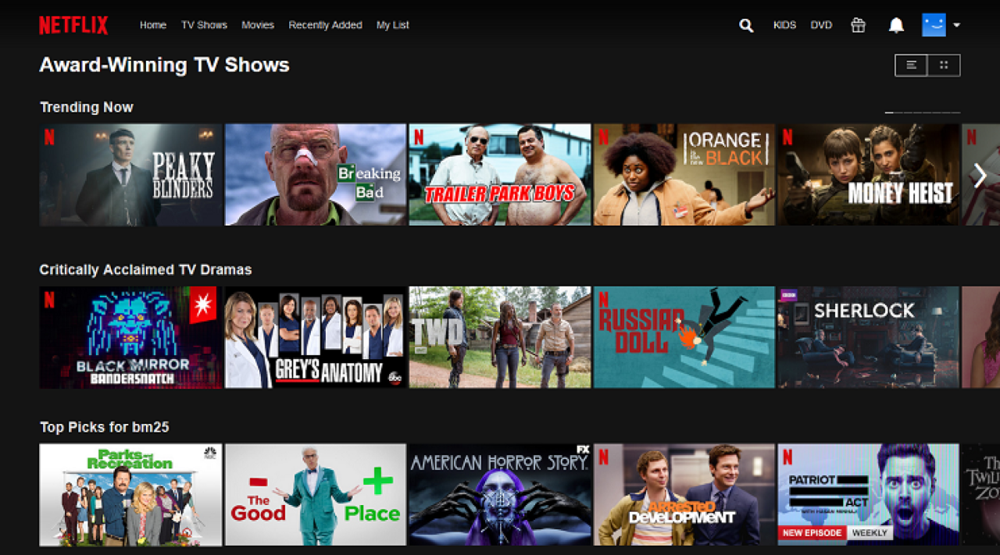

Professional Summary
Computer Science graduate focused on Data Entry, delivering consistent and professional work for every assignment. Offers 4+ years in Data Entry industry environments and top-notch abilities in Accuracy, Privacy, and Time Management. Trained to work with different kinds of data. Reliable candidate ready to take on challenges using problem-solving and task prioritization skills to help the team succeed. Dedicated professional with demonstrated strengths in customer service, time management, and trend tracking. Good at troubleshooting problems and building successful solutions. Excellent verbal and written communicator with a strong background cultivating positive relationships and exceeding goals.
About Me
I am Saidu Tamim Hassan Kamara, a final year Computer Science student at the University of Makeni.
With a strong passion for technology, I am driven to solve complex problems through software development,
networking, and data science. My academic journey has equipped me with a solid foundation in various programming languages,
algorithms, and systems design, which I continuously build upon through hands-on projects and self-directed learning.
I am eager to contribute my skills and knowledge in a professional environment that fosters innovation and growth.
Skills
- Data Management: Research, data collection, and analysis.
- Software Proficiency: Microsoft Office Suite (Word, Excel, PowerPoint, Publisher), Adobe Photoshop.
- Programming: Python, C, Java, MySQL, HTML, CSS.
- Technical Skills: Problem-solving, attention to detail, time management.
- Interpersonal Skills: Communication, teamwork, adaptability, leadership, problem-solving.
- Professionalism: Work ethic, resource planning, creativity.
Projects

Movie Recommendation System
A Python-based system that suggests movies based on user preferences with a GUI for interaction.

Inter-VLAN Routing
Network configuration project using Cisco Packet Tracer to enable communication between VLANs.

Personal Portfolio Website
Responsive personal website showcasing my projects, skills, and experience.

Online Store
Developed an e-commerce website with features like product listings, cart functionality, and payment integration.

Chat Application
Created a real-time chat application using WebSockets for instant messaging between users.

Portfolio Website
Designed and built a portfolio site to showcase various web development and programming projects.
Experience
Branch Manager - Splash Money Transfer
Makeni, Sierra Leone | June 2024 - Current
- Efficiently manage daily cash transactions, including bank collections, client disbursements, and accurate financial recordkeeping.
- Provide comprehensive customer support, addressing inquiries, resolving issues, and fostering strong client relationships.
- Facilitate reliable and timely money transfers from Kuwait to Sierra Leone, adhering to company regulations.
- Maintain stringent security protocols to safeguard cash and customer data.
- Demonstrate strong organizational and time management skills to effectively handle diverse responsibilities.
ICT Technician - Hamdan Enterprise
Freetown, Sierra Leone | January 2023 – Current
- Creating documents in various formats (PowerPoint, Word, Excel) for clients.
- Monitoring and updating our database daily on sales, expenses, profit, and accessories bought.
- Basic software troubleshooting, installation of software on devices, updating device drivers, inspecting work devices for potential viruses.
- Safeguarded data accessibility through effective file management and organization.
- Maintained accuracy while entering high-volume data into West African Examination Council software during entries (W.A.S.S.C.E, B.E.C.E, and N.P.S.E).
ICT Tutor - Peaceful Youth Skills Training Center
Makeni, Sierra Leone | September 2021 - June 2022
- Tracked learner progress via performance records.
- Matched industry trends, technology, and student needs by changing tutoring strategies.
- Simulated testing environments for student exam preparation.
- Identified tutoring gaps, reviewing existing notes and handouts.
- Used tests and assessments to evaluate learner comprehension and knowledge gaps.
- Boosted comprehension with individualized instruction and support.
- Increased student support network to cover community and administration members.
- Encouraged, motivated, and built student confidence using positive reinforcement.
- Taught study methods and note-taking approaches to students.
Data Entry Intern - Sanaya Memorial Academy
Lungi, Sierra Leone | June 2017 - August 2020
- Remained accurate while entering high-volume data into designated fields.
- Minimized errors by contacting document owners to resolve questions, inconsistencies, and missing data.
- Compared data entered to source documentation for accuracy and completeness.
- Verified data accuracy by consistently reconciling work with documentation.
- Eliminated illegible records by sending records to be rescanned.
- Adjusted settings for format, page layout, and line to adhere to style requirements.
- Minimized data loss risks by backing up completed work daily.